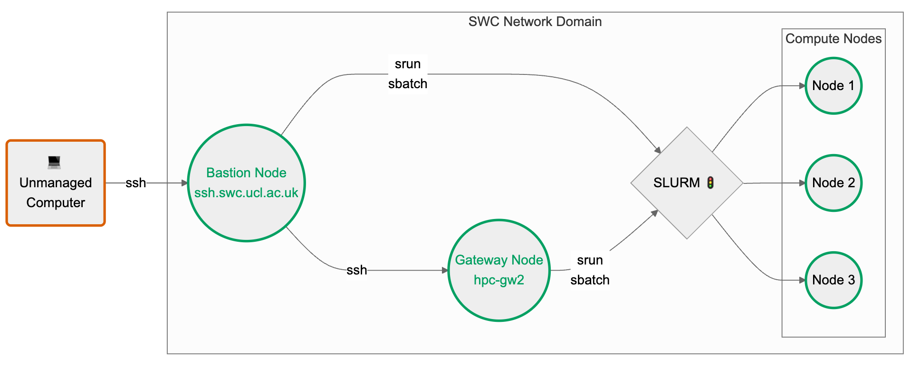

Set up SSH for the SWC HPC cluster#
This guide explains how to connect to the SWC’s HPC cluster via SSH from any personal computer.
If you have access to a desktop managed by the SWC’s IT team the connection is much more straightforward than described here (see the note on managed desktops).
Warning
Some links within this document point to the SWC internal wiki, which is only accessible from within the SWC network. We recommend opening these links in a new tab.
Interpreting code blocks
Shell commands will be shown in code blocks like this
(with the $ sign indicating the shell prompt):
$ echo "Hello world!"
Similarly, Python code blocks will appear with the >>> sign indicating the
Python interpreter prompt:
>>> print("Hello world!")
The expected outputs of both Shell and Python commands will be shown without any prompt:
Hello world!
Abbreviations#
Prerequisites#
You have an SWC account and know your username and password.
You have read the SWC wiki’s section on High Performance Computing (HPC), especially the Logging into the Cluster page.
You know the basics of using the command line, i.e. using the terminal to navigate the file system and run commands.
You have an SSH client installed on your computer. This is usually pre-installed on Linux and macOS. SSH is also available on Windows (since Windows 10), however some steps will differ. If you are a Windows user, read the note below before proceeding.
Note for Windows users
You have two options on how to proceed:
Install Git Bash, which emulates a Linux terminal on Windows and includes tools that are not available on Windows by default, such as
nano, andssh-copy-id. This is the recommended option, as it will allow you to follow along with all commands in this guide, as they are presented. Just assume that all commands are run in Git Bash.If you are using Windows 10 or newer, you can follow this guide (except for the section on SSH keys) using native Windows functionalities as described here.
To Log into the cluster, you can use the same commands as in the guide below, but typed in the Windows
cmd:cmd#ssh <SWC-USERNAME>@ssh.swc.ucl.ac.uk ssh hpc-gw2
The SSH config file section can be followed using the file browser and Notepad, instead of the terminal and
nano. Create the.sshfolder in you home directory, i.e.C:\Users\<USERNAME>\.ssh, if it does not already exist (don’t forget the.at the start of.ssh).You may create and edit the
configfile with Notepad but beware that the file must not have an extension. To create a file without an extension in Windows, you need to make the file extensions visible (click ‘View’ in the file browser and check the box ‘File name extensions’). Theconfigfile contents should be the same as in the guide below.In day-to-day use, you can use the
ssh swc-gatewayandssh swc-bastioncommands natively in Windowscmd, provided that you have defined those aliases in yourconfigfile, as this guide describes.
Log into the cluster#
Run the following commands on the terminal, typing your <SWC-PASSWORD> both times when prompted
(your password will not be displayed on the screen):
$ ssh <SWC-USERNAME>@ssh.swc.ucl.ac.uk
$ ssh hpc-gw2
You have now successfully logged into the cluster 🎉. You may stop reading here, but…
Note
If you want to learn more about why we had to SSH twice, read the next section.
If you want to make you life easier, you can set yourself up with an SSH config file and some SSH keys.
Why do we SSH twice?#
We first need to distinguish the different types of nodes on the SWC HPC system:
the bastion node (or login node) -
ssh.swc.ucl.ac.uk. This serves as a single entry point to the cluster from external networks. By funneling all external SSH connections through this node, it’s easier to monitor, log, and control access, reducing the attack surface. The bastion node has very little processing power. It can be used to submit and monitor SLURM jobs, but it shouldn’t be used for anything else.the gateway node -
hpc-gw2. This is a more powerful machine and can be used for light processing, such as editing your scripts, creating and copying files etc. However don’t use it for anything computationally intensive, since this node’s resources are shared across all users.the compute nodes -
enc1-node10,gpu-sr670-21, etc. These are the machinces that actually run the jobs we submit, either interactively viasrunor via batch scripts submitted withsbatch.

Your home directory, as well as the locations where filesystems like ceph are mounted, are shared across all of the nodes.
The first ssh command - ssh <SWC-USERNAME>@ssh.swc.ucl.ac.uk only takes you to the bastion node. A second command - ssh hpc-gw2 - is needed to reach the gateway node.
Similarly, if you are on the gateway node, typing logout once will only get you one layer outo the bastion node. You need to type logout again to exit the bastion node and return to your local machine.
The compute nodes should only be accessed via the SLURM srun or sbatch commands. This can be done from either the bastion or the gateway nodes. If you are running an interactive job on one of the compute nodes, you can terminate it by typing exit. This will return you to the node from which you entered.
Be mindful of node usage
Avoid running heavy computations on the bastion or gateway nodes, as they are meant for light tasks like text editing or job submissions to SLURM.
For quick tasks that may burden these nodes,
request an interactive session on a compute node using the srun command.
Here’s an example for creating a new conda environment:
$ srun -p cpu -n 4 --mem 8G --pty bash -i
$ module load miniconda
$ conda create -n myenv python=3.10
The first command requests 4 cores and 8GB of memory on a node of the cpu
partition, meant for jobs that do not require GPUs.
Depending on your needs and node availability, you may need to request
a different partition. See the SLURM arguments primer
for more information.
The --pty bash -i part specifies
an interactive bash shell. The following two commands are run in this shell,
on the assigned compute node.
Type exit to leave the interactive session when finished.
Avoid keeping sessions open when not in use.
Note on managed desktops#
The SWC’s IT team offers managed desktop computers equipped with either a Windows or a Linux image. These machines are already part of the SWC’s trusted network domain, meaning you can access the HPC cluster without having to go through the bastion node.
If you are using a managed Windows desktop, you can SSH directly into the gateway node with
ssh hpc-gw2from the Windowscmdor PowerShell. You may use that node to prepare your scripts and submit SLURM jobs.If you are using a managed Linux desktop, you can even bypass the gateway node. In fact, you may directly submit SLURM jobs from your terminal, without having to SSH at all. That’s because managed Linux desktops use the same platform as the HPC nodes and are already equipped with the SLURM job scheduler.
A modified version of the flowchart found above, including managed desktops:

SSH config file#
If you are frequently accessing the cluster from an unmanaged machine, you may find yourself typing the same SSH commands over and over again. You can make your life easier by editing the SSH config file. This is a text file that lives in your home directory and contains a list of aliases for SSH connections.
On your local PC/Laptop, navigate to the .ssh folder in your user’s home ~ directory:
$ cd ~/.ssh
List the files in this directory:
$ ls -1
authorized_keys
config
known_hosts
Some of these files may not exist yet. Next we will open the config file
using the terminal text editor nano:
$ nano config
If the file doesn’t exist yet, it will be created. Add the following lines to the file:
# Specify our intermediate jump host, aka the bastion node
Host swc-bastion
HostName ssh.swc.ucl.ac.uk
User <SWC-USERNAME>
# Specify how to get to the gateway node by jumping through the bastion node
# The gateway hostname is specified as the jump-host would see it
Host swc-gateway
HostName hpc-gw2
User <SWC-USERNAME>
ProxyJump swc-bastion
Save the file by pressing Ctrl+O, then Enter.
Exit the nano editor by pressing Ctrl+X.
From now on, you can directly SSH into the gateway node by typing:
$ ssh swc-gateway
You can also use the same syntax to SSH into the bastion node:
$ ssh swc-bastion
In both cases, typing the logout command once will return you to your local machine.
SSH keys#
If you are bored of typing your password every time you SSH into the cluster, you can set up authentication via SSH keys. You will have to do some work upfront, but it will save you tons of time in the long run. Plus, it’s more secure.
How does SSH key authentication work?
You generate a pair of keys locally - a public and a private one - and then copy the public key to the remote machine. When you try to SSH into the remote machine, the SSH client on your local machine will use the private key to generate a signature, which the SSH server on the remote machine will verify using the public key. If the signature is valid, you will be granted access.
There are several cryptographic algorithms that can be used to generate the keys.
They can be selected using the -t argument of the ssh-keygen command.
In the following example, we use ed25519, as it strikes a good balance between
security and speed for most use cases.
To generate a pair of SSH keys, run the following command on your local machine:
$ ssh-keygen -t ed25519
You will be prompted to enter a file path for the key. You may accept the
default - ~/.ssh/id_ed25519 - or choose another path/name.
Next, you will be prompted to enter a passphrase. This is an extra layer of security, but you can leave it blank if you want.
There are now two new files in the .ssh directory:
$ cd ~/.ssh
$ ls -1
authorized_keys
config
id_ed25519
id_ed25519.pub
known_hosts
The id_ed25519 file is your private key and it should never be shared with anyone.
The id_ed25519.pub file is your public key.
Warning
In most cases, you don’t need to explicitly specify the location of the private key
in your ~/.ssh/config file because SSH will automatically look for the default key names
(like id_rsa, id_ed25519, etc.) in the ~/.ssh directory.
However, if you’re using a non-default name or location for your private key,
or if you have multiple keys and want to specify which one to use for a particular host,
then you can add the IdentityFile directive in your ~/.ssh/config to
point to the private key.
For example, if you have a private key with a custom name <MY-SPECIAL-KEY>
in the ~/.ssh directory, you can add the following lines to your ~/.ssh/config file:
# Specify our intermediate jump host, aka the bastion node
Host swc-bastion
HostName ssh.swc.ucl.ac.uk
User <SWC-USERNAME>
IdentityFile ~/.ssh/<MY-SPECIAL-KEY>
# Specify how to get to the gateway node by jumping through the bastion node
# The gateway hostname is specified as the jump-host would see it
Host swc-gateway
HostName hpc-gw2
User <SWC-USERNAME>
ProxyJump swc-bastion
IdentityFile ~/.ssh/<MY-SPECIAL-KEY>
Next, let’s copy the public key you just generated to the remote machines.
$ ssh-copy-id -i id_ed25519.pub swc-gateway
Explain the above command
The ssh-copy-id command uses the configuration we previously set up
in the config file to figure out how to reach the remote machine.
It copies the specified public key to your home directory on the target machine (in this case swc-gateway) and adds it to the .ssh/authorized_keys file there.
Since your SWC home directory is shared across all HPC nodes, the public
key will be available on all of them. That’s why you only need to run the above command once, with either swc-bastion or swc-gateway as the target.
🎉 Congrats! You can now directly SSH into the gateway node without typing your password:
$ ssh swc-gateway
In case you want to SSH into the bastion node, you can do so by typing:
$ ssh swc-bastion